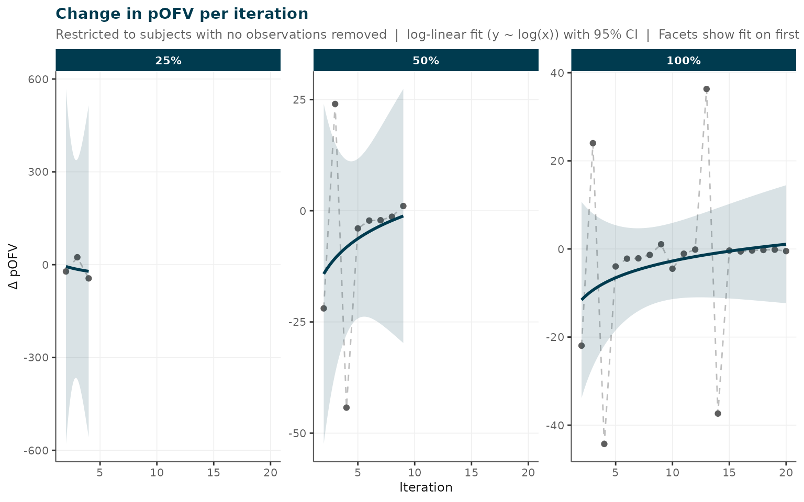

Overview
irxclean provides a structured workflow for detecting
and flagging potentially erroneous pharmacokinetic observations in
real-world clinical datasets. The workflow has two conceptually distinct
phases:
Phase 1 — Pre-model cleaning (run once, before fitting a base model):
- Exclusion criteria – structured logical exclusions: subjects with no doses, observations during infusion, dose AMT outliers, etc.
- Gross data quality assessment – model-independent screening for concentration anomalies, covariate outliers, and missing data.
Phase 2 — Model-informed cleaning (requires a stable base model):
- Iterative flagging – CWRES-based detection via NONMEM/PsN, producing a ranked list of potentially erroneous observations for user review.
- Stability & metrics – tracking parameter stability across iterations.
- Demographic comparison – checking for demographic bias in flagged subjects.
After reviewing flagged observations,
remove_observations_from_data() applies the user-approved
exclusions. A single call to generate_report() produces a
structured HTML summary of findings.
1. Exclusion Criteria
apply_exclusion_criteria() applies a configurable
battery of structured, model-independent exclusions. Unlike gross QC
(which flags for investigation), these checks encode logical rules that
definitively disqualify records from analysis.
dat <- read.csv("my_data.csv")
excl <- apply_exclusion_criteria(
data = dat,
check_no_doses = TRUE, # subjects with no EVID==1 rows
check_no_tdm = TRUE, # subjects with no observation rows
check_during_infusion = TRUE, # obs collected during an ongoing infusion
check_conc_increase = TRUE, # suspicious concentration rises without a dose
conc_increase_threshold = 1.5,
check_dose_outlier = TRUE, # AMT IQR outlier across dose records
dose_iqr_multiplier = 3
)
print(excl)The returned irxclean_exclusions object contains:
| Element | Description |
|---|---|
$data_flagged |
Input data with excl_* logical columns appended |
$data_clean |
Rows where no exclusion criterion is TRUE |
$exclusion_summary |
Per-criterion counts (records, subjects, % of obs) |
$criteria_applied |
Character vector of column names added |
Each criterion adds an excl_* column:
| Column | Criterion |
|---|---|
excl_no_doses |
All rows for subjects with no dose records |
excl_no_tdm |
All rows for subjects with no TDM observations |
excl_during_infusion |
Obs rows where TIME < dose_time + AMT/RATE
|
excl_conc_increase |
Obs rows with a suspicious concentration rise |
excl_dose_outlier |
Dose rows with AMT outside IQR bounds |
You can also pass a named list of row-level logical vectors via
custom_criteria:
# Flag observations with MDV==2 (user-defined exclusion)
excl <- apply_exclusion_criteria(
dat,
custom_criteria = list(mdv2 = dat$MDV == 2)
)The cleaned dataset is then passed to the subsequent stages:
dat_excl <- excl$data_clean2. Gross Data Quality Assessment
After structural exclusions, assess_data_quality()
performs a rapid model-independent screen for data quality issues. These
checks produce flags for investigation — they do not
automatically exclude records.
qc <- assess_data_quality(
data = dat_excl,
covariate_cols = c("AGE", "WT", "HT"), # continuous covariates
categorical_cols = "SEX", # categorical covariates
iqr_multiplier = 3, # IQR x 3 outlier bound
conc_increase_threshold = 1.5 # 50\% rise flags as suspicious
)
print(qc)assess_data_quality() checks for:
| Check | Method |
|---|---|
| Covariate outliers | Values outside Q1 - k x IQR / Q3 + k x IQR |
| Concentration TAD-bin outliers | DV outside IQR bounds within each TAD window |
| Concentration elevations | Fold-increase >= threshold, no intervening dose |
| Missing data | NA rates per column |
plots <- plot(qc)
plots$missing # missing data bar chart
plots$covariate_outliers # covariate outlier dot plots
plots$concentration_bin_outliers # DV vs TAD scatter with outliers highlighted
plots$conc_flags # concentration increase histogram3. Iterative Flagging
The core of irxclean is an iterative NONMEM-based
detection algorithm. At each iteration, the observation with the highest
absolute CWRES is identified, flagged, and held out so the model can be
re-estimated without it. This produces a ranked list of
potentially erroneous observations. The analyst must review
these results before applying any exclusions.
Requirements
-
PsN (
execute,sumo) must be on the systemPATH. - A NONMEM-ready
.csvdataset and a.modmodel file.
Input modes
remove_erroneous_obs() accepts inputs in three ways that
can be mixed freely:
Mode 1 — bare file name (files must be in the current working directory)
The simplest option when setwd() already points to the
project folder. Pass the stem of each filename; the .csv /
.mod extension is added automatically.
results <- remove_erroneous_obs(
dat = "my_data_excl", # reads my_data_excl.csv from getwd()
mod = "my_model", # reads my_model.mod from getwd()
run_id = "clean_run1",
n = 10
)Mode 2 — file path (relative or absolute, extension optional)
Use this when the data and model live in a different directory from
your R session. The extension is stripped and re-added automatically, so
"data/pk.csv" and "data/pk" are
equivalent.
results <- remove_erroneous_obs(
dat = "/projects/busulfan/data/bu_excl.csv",
mod = "/projects/busulfan/models/bu_base",
run_id = "clean_run1",
n = 10
)Mode 3 — R objects already in memory
Pass a data.frame for dat and/or an
nm_model list (from nm_read_model()) for
mod. This is the most seamless option when your data has
just been processed in R (e.g. after
apply_exclusion_criteria()), or when you want to modify the
model programmatically before running.
NONMEM still runs from temporary files on disk —
remove_erroneous_obs() writes the objects there
automatically, so no manual file I/O is needed.
# Data is already in memory from the exclusion criteria step
pk_clean <- excl$data_clean
# Optionally inspect / modify the model programmatically
nm_mod <- nm_read_model("/projects/busulfan/models/bu_base.mod")
# nm_mod$THETA[1] <- "(0, 12)" # tweak a starting value, for example
results <- remove_erroneous_obs(
dat = pk_clean, # data.frame -- no file copy required
mod = nm_mod, # nm_model list -- written to temp dir automatically
run_id = "clean_run1",
n = 10
)You can also mix modes — for example, an in-memory data frame with a file-path model, or vice versa:
results <- remove_erroneous_obs(
dat = excl$data_clean, # in-memory data frame
mod = "/projects/busulfan/models/bu_base", # file path
run_id = "clean_run1",
n = 10
)Common options
results <- remove_erroneous_obs(
dat = "my_data_excl",
mod = "my_model",
run_id = "clean_run1",
n = 10,
verbose = TRUE,
save_results = TRUE, # saves to clean_run1_results.RDS
stability_check = TRUE # automatically assess parameter stability
)The returned list contains:
| Element | Description |
|---|---|
par |
Population parameter estimates per iteration |
rem |
Removed observations (ID, TIME, DV, CWRES, ITERATION) |
phi |
Individual OBJ values per iteration |
rmse |
RMSE per iteration |
stability |
Stability assessment (if stability_check = TRUE) |
param_labels |
Human-readable parameter names (parsed from .mod comments) |
Results are saved to <run_id>_results.RDS and can
be reloaded:
results <- load_removal_results("clean_run1")4. Removal Metrics and Model Stability
Removal Metrics
plot_removal_metrics() visualises how model-fit
statistics evolve as successive observations are removed. Five metrics
are available:
# Change in pseudo-OFV at each iteration
plot_removal_metrics(results, metric = "pOFV")
# THETA parameter trajectories (normalised to final estimate)
plot_removal_metrics(results, metric = "thetas")
# OMEGA parameter trajectories (diagonal elements)
plot_removal_metrics(results, metric = "omegas")
# SIGMA parameter trajectories (non-fixed diagonal elements; NULL if all fixed)
plot_removal_metrics(results, metric = "sigmas")
# RMSE progression
plot_removal_metrics(results, metric = "rmse")The pOFV (pseudo-OFV) is computed only from subjects with no observations removed across all iterations. A sharp drop at early iterations followed by a plateau suggests meaningful removals with diminishing returns.
THETA and OMEGA labels are automatically applied when the
.mod file contains inline comments in the format
; <index>. <Label>:
$THETA
(0, 11.6) ; 1. CL
(0, 9.2) ; 2. V1
(0, 0.07) ; 3. prop error
$SIGMA
0.0048 ; 1. prop
800 ; 2. addWhen labels contain prop / proportional /
ruv_prop or add / additive /
ruv_add, the corresponding parameter is automatically
detected and promoted to the Key Results section of the
HTML report.
Model Stability
stability <- check_model_stability(
results,
threshold_pct = 20 # warn if any parameter drifts > 20\% from baseline
)
print(stability)
# View unstable parameters
stability_flag_table(stability)
# Plot parameter drift and RSE
plot(stability)$parameter_drift
plot(stability)$param_rseEach parameter is classified as stable, drifted (shifted monotonically to a new value — expected when a genuine outlier is removed), or unstable (bouncing / not settled by the final iteration).
5. Demographic Comparison
A critical check after iterative removal is whether subjects whose observations were flagged differ systematically from the rest of the cohort. Demographic bias in removals could introduce bias into the final analysis.
demo <- plot_demographic_comparison(
data = dat_excl,
results = results,
continuous_cols = c("AGE", "WT", "HT", "SCR"),
categorical_cols = c("SEX", "RACE"),
id_col = "ID"
)
# Statistical test results
print(demo$stats)
# Individual covariate plots
demo$panels[[1]]6. Producing a Cleaned Dataset
After reviewing the ranked flagged observations—including stability metrics, demographic comparisons, and any additional clinical or laboratory investigation—decide how many (if any) to exclude. A flagged observation is not necessarily erroneous: it may represent a genuine patient subgroup or an unusual but valid measurement.
dat_clean <- remove_observations_from_data(
data = dat_excl,
results = results,
n = 5, # remove only the first 5 iterations
columns = list(ID = "ID", TIME = "TIME", DV = "DV")
)
write.csv(dat_clean, "my_data_clean.csv", row.names = FALSE)7. Automated Report
All iterative-removal findings can be compiled into a structured, self-contained HTML report. The report has two sections:
- Key Results (always visible): removed observations table, pOFV change, proportional/additive error parameter stability (auto-detected from labels), and nRMSE trend.
- Detailed Results (collapsible): full THETA, OMEGA, and SIGMA stability facet plots, plus model stability assessment.
generate_report(
results = results,
data = dat_excl,
# prop_error_param / add_error_param auto-detected from results$param_labels
# override explicitly if needed:
prop_error_param = "THETA7",
add_error_param = "SIGMA.1.1",
continuous_cov_cols = c("AGE", "WT", "HT"),
categorical_cov_cols = "SEX",
title = "Busulfan PK -- Cleaning Analysis",
output_file = "busulfan_cleaning_report.html"
)Note:
quality_resultsfromassess_data_quality()is no longer passed togenerate_report(). Gross QC findings are documented separately (e.g. by printing or plotting theirxclean_qualityobject) before the base model is fitted.
Example: Using Pre-Computed Results
The package ships with a pre-computed results file from a busulfan PK dataset so you can explore the API without needing NONMEM:
rds <- system.file("extdata", "busulfan_results.RDS", package = "irxclean")
results <- readRDS(rds)
# pOFV plot
plot_removal_metrics(results, metric = "pOFV", verbose = FALSE)
stability <- check_model_stability(results, threshold_pct = 20, verbose = FALSE)
print(stability)
#> irxclean model stability (threshold: 20%)
#> stable : 4 parameter(s)
#> drifted : 3 parameter(s)
#> unstable : 10 parameter(s)
#>
#> Parameter summary:
#> PARAMETER RSE_PCT N_REVERSALS CV_LATE_PCT DRIFT_PCT STATUS
#> TH_CL 37.32 12 8.065 5.08e+01 drifted
#> TH_V 34.43 10 0.326 1.92e+01 drifted
#> MAT-MAG 7870.87 9 16.079 1.36e+01 unstable
#> K_MAT 37.68 7 3.686 5.21e+00 stable
#> PROP error 6.10 4 0.797 1.97e+01 drifted
#> ADD error 78.03 11 0.270 4.77e-01 unstable
#> DROP 88.68 12 13.318 5.86e+02 unstable
#> SHAPE 443.64 10 15.904 1.07e+04 unstable
#> allo ffm exp 4.61 8 0.984 6.59e+00 stable
#> Sex effect on V 1.27 11 0.149 2.02e+00 stable
#> Q 119.05 8 4.428 7.14e+01 unstable
#> V2 98.14 10 2.221 5.37e+01 unstable
#> IIV CL 9.84 9 0.268 1.96e+00 stable
#> IIV V1 137.25 10 0.721 2.30e+01 unstable
#> IOV CL 135.55 9 0.000 9.78e+01 unstable
#> IOV V1 370.66 3 0.000 0.00e+00 unstable
#> IIV V2 28.55 9 10.694 3.16e+01 unstable
#>
#> nRMSE trend: decreasing